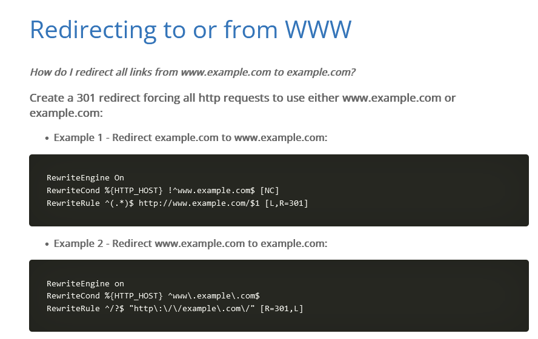

USB Wifi Network Adaptör ile Modem Oluşturma
İçinde “form” tag'ı bulunan bi siteyi klonlayıp “apache2” sunucumuzun içine koyuyoruz. “form” tag'i olmazsa username ve password alamayız. Örnek olarak;
burada ki form action kısmının gittiği yeri kendi index.html adresimizle değiştirmeliyiz ki form sayesinde girilen pass ve username bilgilerini görebilelim.
Wifi network adaptör ile modem gibi görünen bir yayın verebilmemiz için ilk resimde de çözüm olarak göstediğimiz gibi “hostapd” ve bu yayında bize bağlanacak cihazlara DHCP kullanarak ip atamak ve de dns çözümlemesi işlemleri için ise “dnsmasq” kullanacağız. Bu ikisini de linux cihazımıza indiriyoruz.
dnsmasq.conf dosyası oluşturma;

bu şekilde kendimiz bir configure dosyası oluşturup gerekli ayarları verdik.
conf dosyasında bir hata yapıp yapmadığımızı ve de dosyamızı çalıştırmak için şu komutu girmeliyiz;
bi hata almadık demek ki conf dosyamızda bir sorun yok.
Şimdi de hostapd.conf dosyasını oluşturalım.
hostapd.conf dosyası oluşturma;

bu şekilde kendimiz bir configure dosyası oluşturup gerekli ayarları verdik.
Şimdi artık wi-fi ağımızı yayınlamak için şu komutu vermeliyiz;
"wlan0: AP-ENABLED" yazısını gördüysek ağımız yayınlanmış demektir, configure dosyasında belirttiğimiz “ssid” ismi ne ise o şekilde wi-fi olarak ağımız yayınlandı.
Tüm bunların ardından yayınlanan ağımıza bağlanmadan önce birde netmask ataması yapalım;
netmask atamasını da dnsmasq.conf dosyasında ağımızı oluşturmak için modeme verdiğimiz ip adresini girerek resimde görüldüğü şekilde veriyoruz.
ve apache server'ı başlatmayı unutmuyoruz;
Şimdi ağımız hazır fakat ağımıza bağlanan cihazlara browser üzerinden otomatik bir site açıp oraya yönlendirmemiz lazım. Bunun için oluşturduğumuz Captive Portal'da sistem normalde ilk internete bağlandığımızda bir request yollanır eğer bu istek normal olarak dönerse internet var, eğer dönmezse bu bir Captive Portal olabilir diye düşünüyor. İşte bu request (istekler) lerin doğru düzgün bir şekilde işlenmesi için www yönlendirmesini kaldırmamız ve yeni bir yönlendirme yazmamız lazım ki kullanıcı ağa bağlandığı anda bizim istediğimiz login page'e (Captive Portal) yönlensin.
www yönlendirmesi
bu şekilde bir arama yapıp araştırmaya başlıyoruz.
bu sitede anlatıyor nasıl yapılacağı;

iphone gibi cihazlarda eğer sorun çıkıyorsa ek olarak aşağıda ki komutlar eklenir;

Sonuç olarak bu www sorunundan kurtulmak için şu şekilde komutlar gerekiyor;
Şimdi gelelim bu komutları nereye ekleyeceğimize.
Düzenlenecek dosya ve dosyanın yeri;
bu şekilde Directory tag'i oluşturup arasına kodlarımızı yazıyoruz.
Bir hata alırsak da hatayı şu şekilde yönlendirebiliriz;
altı çizili komut ile hatayı root' a (/) yönlendirdik.
Bu conf dosyasında yapmış olduğumuz değişikliklerin geçerli olması için;
bu komutu yazıp çalıştırıyoruz.
Mesela hedef modemin ismi “hedef modem” olsun. Bizde buna alternatif olarak “hedef modem v2” gibi yeni bir isim ile bu ağı oluşturup, ardından kullanıcılara Deauthentication Attack yaparız. Kullanıcı internete giremeyince wi-fi ağlarında “hedef modem v2” görüp ona bağlanır. Bizde kullanıcıyı oluşturduğumuz bu login sayfasına yönlendirip şifresini alabiliriz. Bu işlemin mantığı bu şekilde çalışıyor.
Bağlanan kullanıcıların şifrelerini görme
Wireshark açıp wlan0 seçiyoruz;
ardından start capturing packets seçeneği ile dinlemeyi başlatıyoruz;
http olarak paketleri filtreliyoruz;
şimdi bize POST metod arayıp buluyoruz. Bulduğumuz bir post metoduna çift tıklayıp açılan pencerede username, password bulup bilgileri elde etmiş oluyoruz;
Önemli Not:
Eğer bu adımları yapmamıza rağmen olmadıysa,
DNS değiştir
linux reset at
ardından aşağıda ki komutları sırasıyla gir;
service NetworkManager stop → bu esnada internet bağlantın kesilecek ama sorun değil diğer komutları yazmaya devam et.
ifconfig wlan0 10.0.0.1 netmask 255.255.255.0
a2enmod rewrite
dnsmasq -C /root/Documents/Hotspot/dnsmasq.conf
hostapd /root/Documents/Hotspot/hostapd.conf -B
service apache2 start
bunun dışında dnsmasq.conf ve hostapd.conf dosyalarını kontrol et, channel değiştirmeyi deneyebilirsin, modem için verdiğin ip adresini kontrol et ve dosyaları kaydettikten sonra linux reset atıp yukarıda ki önemli not kısmında verilen komutları yeniden gir.